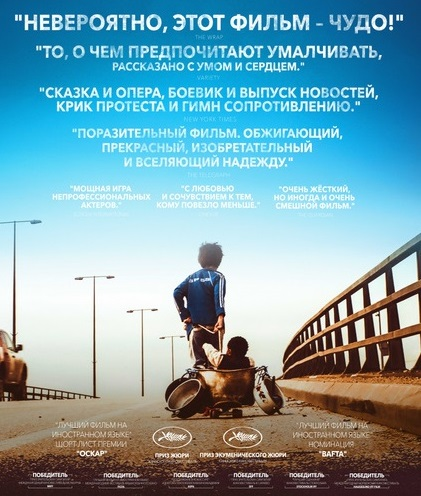
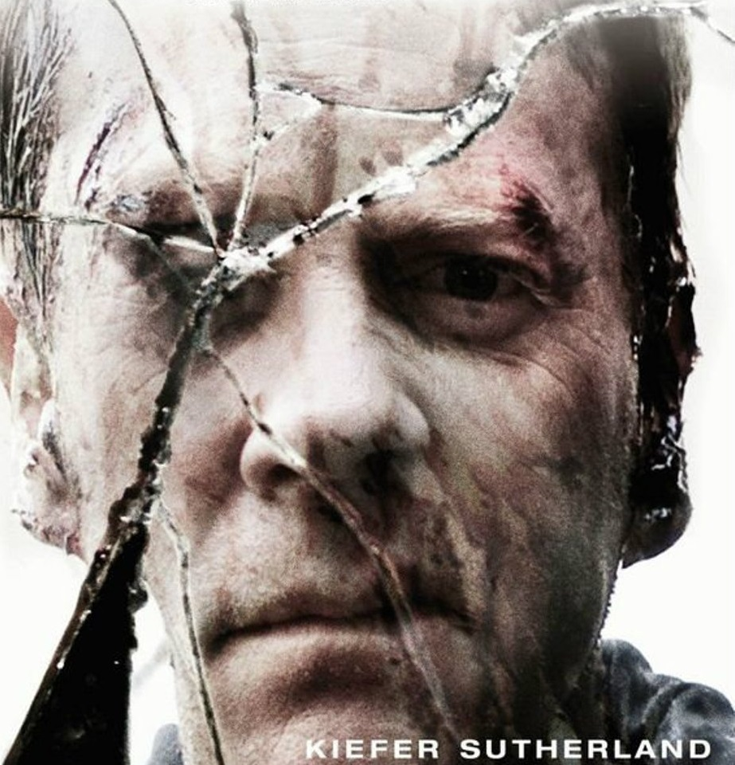
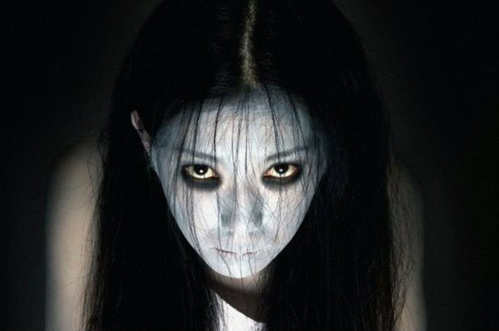
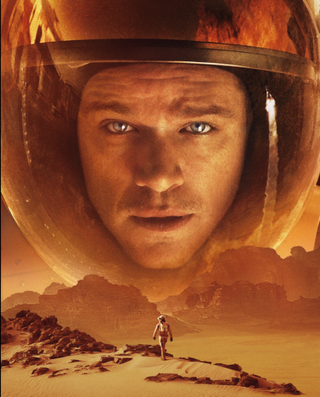
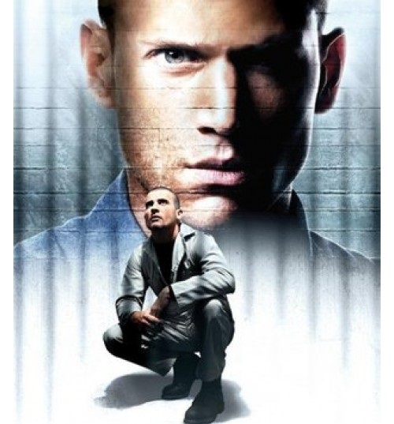

Анимэ
Наруто (2002-2017)
Рассказывающая о жизни шумного и непоседливого ниндзя-подростка Наруто Удзумаки, мечтающего достичь всеобщего признания и стать Хокагэ — главой своего селения и сильнейшим ниндзя. Чтобы добиться уважения окружающих, ему предстоит пройти через тысячи препятствий: экзамены ниндзя, различные миссии и сражения.
Атака титанов (2013—…)
Уже многие годы человечество ведёт борьбу с титанами — огромными существами, которые не обладают особым интеллектом, зато едят людей и получают от этого удовольствие. После продолжительной борьбы остатки человечества построили высокую стену, окружившую страну людей, через которую титаны пройти не могли. С тех пор прошло сто лет, люди мирно живут под защитой стены. Но однажды подросток Эрэн и его сводная сестра Микаса становятся свидетелями страшного события — участок стены разрушается супертитаном, появившимся прямо из воздуха. Титаны нападают на город, и дети в ужасе видят, как один из монстров заживо съедает их мать. Эрэн клянётся, что убьёт всех титанов и отомстит за человечество.
Боец Баки (2001)
Каждый воин живёт одним днём. Каждый бесстрашный борец знает, что любая минута может оказаться последней. Всегда может найтись кто-то сильнее или быстрее. Ради победы или выживания каждый готов на всё. И хотя бы раз в жизни каждый из них задумывается, каково чувствовать себя лучшим из лучших. Тринадцатилетний юноша Бака пытается победить своего тирана отца, сильнейшего на планете бойца. На пути к победе он встречает массу боев, ранений и умопомрачительных тренировок.
Ванпанчмен (2015-2019)
Парень по имени Сайтама живёт в мире, иронично похожем на наш. Ему 25, он лыс и прекрасен и к тому же силен настолько, что с одного удара аннигилирует всё, что представляет опасность для человечества. Он ищет себя в этой жизни, попутно раздавая подзатыльники монстрам и злодеям.
Тетрадь смерти (2006-2007)
Старшекласснику Лайту Ягами в руки попадает тетрадь синигами Рюка. Каждый человек, чьё имя записать в эту тетрадку, умрёт, поэтому Лайт решает бороться со злом на земле.
Хвост Феи (2009-2019)
Фейри Тейл — знаменитая на весь мир Гильдия волшебников по найму. Молодая волшебница Люси была уверена, что, став одним из её членов, она попала в самую замечательную на свете Гильдию. Но до тех пор, пока не познакомилась со своими новыми друзьями — взрывным огнедышащим и сметающим всё на своём пути Нацу, летающим говорящим котом Хэппи, эксгибиционистом Греем, занудой-берсерком Эрзой, гламурным и любвеобильным Локи. Вместе им предстоит одолеть немало врагов и пережить множество незабываемых приключений.

Боевик/Криминал
Джентльмены (2019)
Один ушлый американец ещё со студенческих лет приторговывал наркотиками, а теперь придумал схему нелегального обогащения с использованием поместий обедневшей английской аристократии и очень неплохо на этом разбогател. Другой пронырливый журналист приходит к Рэю, правой руке американца, и предлагает тому купить киносценарий, в котором подробно описаны преступления его босса при участии других представителей лондонского криминального мира — партнёра-еврея, китайской диаспоры, чернокожих спортсменов и даже русского олигарха.
Джон Уик (2014)
Джон Уик - на первый взгляд, самый обычный среднестатистический американец, который ведет спокойную мирную жизнь. Однако мало кто знает, что он был наёмным убийцей, причём одним из лучших профессионалов в своём деле. После того как сынок главы бандитской группы со своими приятелями угоняет его любимый «Мустанг» 1969 года выпуска, при этом убив его собаку Дейзи, которая была подарком недавно почившей супруги, Джон вынужден вернуться к своему прошлому. Теперь Уик начинает охоту за теми, кто имел неосторожность перейти ему дорогу, и он готов на всё, чтобы отомстить.
Иллюзия обмана (2013)
Команда лучших иллюзионистов мира проворачивает дерзкие ограбления прямо во время своих шоу, играя в кошки-мышки с агентами ФБР.
Славные парни (2016)
Что бывает, когда напарником брутального костолома становится субтильный лопух? Наемный охранник Джексон Хили и частный детектив Холланд Марч вынуждены работать в паре, чтобы распутать плевое дело о пропавшей девушке, которое оборачивается преступлением века. Смогут ли парни разгадать сложный ребус, если у каждого из них – свои, весьма индивидуальные методы.
Вестерн
Джанго освобожденный (2012)
Эксцентричный охотник за головами, также известный как Дантист, промышляет отстрелом самых опасных преступников. Работенка пыльная, и без надежного помощника ему не обойтись. Но как найти такого и желательно не очень дорогого? Освобождённый им раб по имени Джанго – прекрасная кандидатура. Правда, у нового помощника свои мотивы – кое с чем надо сперва разобраться.
Одинокий рейнджер (2013)
История блюстителя закона Джона Рида, который с помощью индейца Тонто стал легендарным мстителем в маске, стоящим на защите справедливости. Тонто с юмором и небылицами повествует о тех приключениях, которые пришлось пережить двум непохожим друг на друга героям, сведенным судьбой для того, чтобы вместе сражаться против общего врага. Им приходится противостоять жадности и коррупции во времена, когда появление первых железных дорог изменило представление о власти и могуществе в мире.
Омерзительная восьмерка (2015)
США после Гражданской войны. Легендарный охотник за головами Джон Рут по кличке Вешатель конвоирует заключенную. По пути к ним прибиваются еще несколько путешественников. Снежная буря вынуждает компанию искать укрытие в лавке на отшибе, где уже расположилось весьма пестрое общество: генерал конфедератов, мексиканец, ковбой… И один из них - не тот, за кого себя выдает.
Детектив
Достать ножи (2019)
На следующее утро после празднования 85-летия известного автора криминальных романов Харлана Тромби виновника торжества находят мёртвым. Налицо — явное самоубийство, но полиция по протоколу опрашивает всех присутствующих в особняке членов семьи, хотя, в этом деле больше заинтересован частный детектив Бенуа Блан. Тем же утром он получил конверт с наличными от неизвестного и заказ на расследование смерти Харлана. Не нужно быть опытным следователем, чтобы понять, что все приукрашивают свои отношения с почившим главой семейства, но Блану достаётся настоящий подарок — медсестра покойного, которая физически не выносит ложь.
Убийство в Восточном экспрессе (2017)
Путешествие на одном из самых роскошных поездов Европы неожиданно превращается в одну из самых стильных и захватывающих загадок в истории. Фильм рассказывает историю тринадцати пассажиров поезда, каждый из которых находится под подозрением. И только сыщик должен как можно быстрее разгадать головоломку, прежде чем преступник нанесет новый удар.
Шерлок Холмс (2009)
Величайший в истории сыщик Шерлок Холмс вместе со своим верным соратником Ватсоном вступают в схватку, требующую нешуточной физической и умственной подготовки, ведь их враг представляет угрозу для всего Лондона.
Драма
Дневник памяти (2004)
Это история отношений юноши и девушки из разных социальных слоев, живших в Южной Каролине. Ной и Элли провели вместе незабываемое лето, пока их не разделили вначале родители, а затем Вторая мировая война. После войны все изменилось: Элли обручилась с удачливым бизнесменом, а Ной жил наедине со своими воспоминаниями в старинном доме, который ему удалось отреставрировать. Когда Элли прочла об этом в местной газете, она поняла: ей нужно найти его и решить наконец судьбу их любви...
Капернаум (2018)
12-летний Зейн не может точно ответить на вопрос, сколько у него братьев и сестер, но уверен, что детей в его семье должно было быть меньше. Несмотря на юный возраст, Зейн нелегально работает, следит за младшими, помогает старшим, ищет деньги и документы на эмиграцию в Швецию. Он смотрит на мир с нескрываемой ненавистью. Ему есть что ненавидеть. Дети на улицах Бейрута попрошайничают, едят посыпанный сахаром лед и чипсы, девочек как можно раньше продают замуж, сам он вынужден есть, что попало, спать, где придется, и самое главное – он только что получил пятилетний срок. В тюрьме Зейн подаёт в суд на родителей. За то, что они дали ему жизнь.
Престиж (2006)
Роберт и Альфред - фокусники-иллюзионисты, которые на рубеже XIX и XX веков соперничали друг с другом в Лондоне. С годами их дружеская конкуренция на профессиональной почве перерастает в настоящую войну. Они готовы на все, чтобы выведать друг у друга секреты фантастических трюков и сорвать их исполнение. Непримиримая вражда, вспыхнувшая между ними, начинает угрожать жизни окружающих их людей…
Иллюзионист (2005)
Вена. Начало 20 века. В городе появляется загадочный человек, называвший себя иллюзионистом Эйзенхаймом. Он показывает публике невиданные фокусы, которые кажутся не иначе как волшебством. Слава о необыкновенном чародее доходит до кронпринца Леопольда, который почтил своим присутствием одно из представлений Эйзенхайма. Леопольда сопровождает его будущая невеста Софи. Её появление в зале дает толчок для целой вереницы необъяснимых событий, корни которых уходят в прошлое...
Философы: Урок выживания (2013)
В международной школе в Джакарте таинственный учитель философии в качестве выпускного экзамена предлагает 20 студентам провести эксперимент. Этот опыт будет самым экстремальным, с которым они когда-либо сталкивались. Используя только силу логики, студенты должны выбрать, кто из них будет достоин получить место в подземном бункере - единственном месте, где можно спастись от приближающейся ядерной катастрофы. Бункер рассчитан на десять человек, а значит, тех, кого не выбирают, ожидает жестокая смерть. Реальность классной комнаты эффектно перетекает в воображаемый, но в то же время пугающий мир надвигающегося апокалипсиса...
Комедия
Агент Джонни Инглиш (2003)
История самого некомпетентного и недалекого Британского дипломата, которого только можно представить, которого ошибочно принимают за самого знаменитого и опасного шпиона Великобритании, Джонни Инглиша. Из-за этой путаницы герой оказывается вовлеченным в смертельную схватку с авторами очередного дьявольского плана.
Безумно влюбленный (1981)
Челентано - невозмутимый и грубоватый малый Барнаба Чиккини - избалованный женским вниманием водитель автобуса в Риме. Однажды он случайно встречает принцессу небольшого княжества Сан-Тулип - красавицу Кристину. Но к чему приведет эта встреча - не знают ни он, ни она...
Дом с паранормальными явлениями (2013)
Малкольм и Киша переезжают в дом своей мечты, но вскоре понимают, что там уже проживает демон. Когда Киша становится одержимой, Малкольм обращается за помощью к священнику, экстрасенсу и команде охотников за привидениями.
Напряги извилины (2008)
Неуклюжие приёмы секретного агента Максвелла Смарта, взявшегося за обезвреживание группировки «Хаос», стремящейся к власти над миром, ставят операцию под угрозу. Во избежание провала командование прикрепляет к Смарту Агента 99...
Отель «Гранд Будапешт» (2014)
Фильм рассказывает об увлекательных приключениях легендарного консьержа Густава и его юного друга, портье Зеро Мустафы. Сотрудники гостиницы становятся свидетелями кражи и поисков бесценных картин эпохи Возрождения, борьбы за огромное состояние богатой семьи и… драматических изменений в Европе между двумя кровопролитными войнами XX века.
Разборки в стиле кунг-фу (2004)
30-е годы ХХ века — время господства на улицах Шанхая жестоких законов банд, поделивших город на сферы влияния. Группировка Топоры наводит страх на мирных жителей и вдохновляет на подвиги юных подражателей. Однажды один из таких не в меру горячих юношей устраивает настоящий погром в Свинарном переулке на окраине города, выдав себя за одного из Топоров. Это становится причиной начала войны между настоящими участниками банды и обитателями местных трущоб, которые все как один оказываются мастерами боевых искусств.
Убойный футбол (2001)
Шесть братьев под руководством опытного футбольного тренера создают непобедимую команду. Объединив неоценимый опыт древних мастеров кунг-фу и современную тактику футбольного боя, они подают заявку на участие в престижном футбольном первенстве с призом в миллион долларов.
Укрощение строптивого (1980)
Категорически не приемлющий женского общества грубоватый фермер вполне счастлив и доволен своей холостяцкой жизнью. Но неожиданно появившаяся в его жизни женщина пытается изменить его взгляды на жизнь и очаровать его.
Основано на реальных событиях
Выживший (2015)
Охотник Хью Гласс серьезно ранен на неизведанных просторах американского Дикого Запада. Товарищ Хью по отряду покорителей новых земель Джон Фицжеральд предательски оставляет его умирать в одиночестве. Теперь у Гласса осталось только одно оружие – его сила воли. Он готов бросить вызов первобытной природе, суровой зиме и враждебным племенам индейцев, только чтобы выжить и отомстить Фицжеральду.
Волк с уолл стрит (2013)
1987 год. Джордан Белфорт становится брокером в успешном инвестиционном банке. Вскоре банк закрывается после внезапного обвала индекса Доу-Джонса. По совету жены Терезы Джордан устраивается в небольшое заведение, занимающееся мелкими акциями. Его настойчивый стиль общения с клиентами и врождённая харизма быстро даёт свои плоды. Он знакомится с соседом по дому Донни, торговцем, который сразу находит общий язык с Джорданом и решает открыть с ним собственную фирму. В качестве сотрудников они нанимают нескольких друзей Белфорта, его отца Макса и называют компанию «Стрэттон Оукмонт». В свободное от работы время Джордан прожигает жизнь: лавирует от одной вечеринки к другой, вступает в сексуальные отношения с проститутками, употребляет множество наркотических препаратов, в том числе кокаин и кваалюд. Однажды наступает момент, когда быстрым обогащением Белфорта начинает интересоваться агент ФБР...
Далласский клуб покупателей (2013)
Реальная история Рона Вудруфа, техасского электрика, у которого в 1985 году обнаружили СПИД. Врачи отвели ему всего 30 дней, но он не пожелал смириться со смертным приговором и сумел продлить свою жизнь, принимая нетрадиционные лекарства, а затем наладил подпольный бизнес по продаже их другим больным.
Легенда (2015)
Фильм расскажет историю близнецов Реджи и Ронни Крэй, культовых фигур преступного мира Великобритании 1960-х. Братья возглавляли самую влиятельную бандитскую группировку Ист-Энда. В их послужном списке: вооруженные грабежи, рэкет, поджоги, покушения, убийства и собственный ночной клуб, куда доезжали даже голливудские знаменитости. Среди их жертв — криминальные авторитеты Джек МакВитти и Джордж Корнелл.
Триллер
Ван Хельсинг (2004)
Глубоко в Карпатах лежит таинственная страна Трансильвания — мир, в котором зло встречается на каждом шагу, мир, в котором опасность оживает с заходом солнца, и где монстры, живущие в глубине человеческих кошмаров, обретают форму. В этот мир попадает легендарный охотник на чудовищ Ван Хельсинг.
Джокер (2019)
Готэм, начало 1980-х годов. Комик Артур Флек живет с больной матерью, которая с детства учит его «ходить с улыбкой». Пытаясь нести в мир хорошее и дарить людям радость, Артур сталкивается с человеческой жестокостью и постепенно приходит к выводу, что этот мир получит от него не добрую улыбку, а ухмылку злодея Джокера.
Игра (1997)
Николас Ван Ортон - само воплощение успеха. Он преуспевает, он невозмутим и спокоен, привык держать любую ситуацию под контролем. На день рождения Николас получает необычный подарок - билет для участия в «Игре». Ему обещают, что игра вернет яркие чувства, позволит ощутить вкус и остроту жизни. Вступив в игру, Николас начинает осознавать, что это игра всерьез, игра не на жизнь, а на смерть.
Куб (1997)
Группа людей, которые никак друг с другом не связаны, неизвестным образом внезапно оказываются в странной кубической комнате, каждая грань которой снабжена люком, ведущим в другую такую же комнату. Единственная разница между комнатами – это их цвет и наличие разнообразных смертоносных ловушек. Совместными усилиями эти пятеро пытаются найти ключ к выходу из этого гигантского сооружения.
Мгла (2007)
Маленький городок накрывает сверхъестественный туман, отрезая людей от внешнего мира. Группе героев, оказавшихся в этот момент в супермаркете, приходится вступить в неравный бой с обитающими в тумане монстрами.
Начало (2010)
Кобб – талантливый вор, лучший из лучших в опасном искусстве извлечения: он крадет ценные секреты из глубин подсознания во время сна, когда человеческий разум наиболее уязвим. Редкие способности Кобба сделали его ценным игроком в привычном к предательству мире промышленного шпионажа, но они же превратили его в извечного беглеца и лишили всего, что он когда-либо любил.

Остров проклятых (2009)
Два американских судебных пристава отправляются на один из островов в штате Массачусетс, чтобы расследовать исчезновение пациентки клиники для умалишенных преступников. При проведении расследования им придется столкнуться с паутиной лжи, обрушившимся ураганом и смертельным бунтом обитателей клиники.
Паразиты (2019)
Обычное корейское семейство Кимов жизнь не балует. Приходится жить в сыром грязном полуподвале, воровать интернет у соседей и перебиваться случайными подработками. Однажды друг сына семейства, уезжая на стажировку за границу, предлагает тому заменить его и поработать репетитором у старшеклассницы в богатой семье Пак. Подделав диплом о высшем образовании, парень отправляется в шикарный дизайнерский особняк и производит на хозяйку дома хорошее впечатление. Тут же ему в голову приходит необычный план по трудоустройству сестры.
Судная ночь (2013)
Мир будущего – мир без преступности… безработицы… войн. И все это благодаря одной ночи в году, когда можно отправить на тот свет любого – злобного босса, шумных соседей, надоевших родственников. В Судную ночь дозволено все – главное дожить до рассвета.
Ужасы
13 Привидений (2001)
После смерти странного дядюшки Сайруса Артур Критикос унаследовал его не менее странный дом. В этом причудливом здании все стены и пол из стекла украшены надписями на латыни, а двери живут своей жизнью, открываясь и закрываясь в ритме, недоступном человеческому пониманию. Не сразу Артур поймет, что, переступив порог этого жуткого особняка, он исполнит злую волю Сайруса и освободит дюжину мстительных призраков из подвала. И тогда энергия духов приведет в действие агрегат, открывающий путь ко всей мощи потустороннего мира. Но для этого нужно, чтобы к чёрному Зодиаку двенадцати привидений присоединилось ещё одно.
1408 (2007)
Известный писатель Майк Энслин, автор хоррор-романов, пишет очередную книгу о необычных явлениях и полтергейсте в отелях. Не веря в существование загробной жизни, Энслин решает поселиться в печально известном номере 1408 отеля «Дельфин», который пустует многие годы - по слухам, там обитают привидения. Невзирая на предупреждение менеджера отеля, упрямец настаивает на своём, даже не предполагая, каким кошмаром обернется предстоящая ночь.
Астрал (2010)
Джош и Рене переезжают с детьми в новый дом, но не успевают толком распаковать вещи, как начинаются странные события. Необъяснимо перемещаются предметы, в детской звучат странные звуки… Но настоящий кошмар начинается для родителей, когда их десятилетний сын Далтон впадает в кому. Все усилия врачей в больнице помочь мальчику безуспешны. Несколько месяцев спустя его возвращают домой, где за несчастным ребенком ухаживают мать и сиделка. Но загадочные явления в доме продолжаются. Отчаявшиеся родители готовы обратиться за помощью к кому угодно, и вскоре выясняется, что Далтон в бессознательном состоянии связан с паранормальным миром.
Белый шум (2004)
Потеряв любимую жену Анну, Джонатан Риверс решает начать новую жизнь. Он переезжает в новый дом, перестает общаться с друзьями. Вскоре на него выходит человек, утверждающий, что слышит голос Анны по радио. Приняв незнакомца за сумасшедшего, Джонатан забывает этот разговор. Но когда через полгода у него зазвонит телефон и на дисплее высветится номер мобильного погибшей жены Риверс поймет, что должен начать собственное расследование обстоятельств ее смерти...
Джиперс Криперс (2001)
Брат и сестра заметили его на безлюдной дороге рядом с жуткой, обветшалой церковью. Страшная фигура в длинном чёрном плаще и широкополой шляпе скидывала в подвал свертки, испачканные чем-то красным. После увиденного нужно было немедленно вдавить педаль газа взятой напрокат машины и умчаться от этого проклятого места как можно дальше. Но Дэрри и Триш допустили непоправимую, смертельную ошибку. Они решили вернуться и посмотреть: что же он прячет там, в подвале покосившейся церкви? Это безрассудное любопытство обернулось самым невообразимым кошмаром, который только можно себе представить…
Дом восковых фигур (2005)
Автомобиль ломается, и компании молодых людей приходится обратиться за помощью к обитателям маленького заброшенного городка. Главной достопримечательностью этой местности является дом с большим количеством реалистичных восковых фигур.
Заклятие (2013)
История Эда и Лоррейн Уоррен, всемирно известных детективов, занимавшихся паранормальными расследованиями. К ним за помощью обратилась семья фермеров, которой жизни не давал злой дух. Вынужденные сражаться с могущественной демонической сущностью Уоррены сталкиваются с самым пугающим случаем в своей жизни.
Затащи меня в ад (2009)
Кристина Браун живет в Лос-Анжелесе и работает в банке в кредитном отделе. У неё обаятельный и любящий бойфренд, профессор Клэй Далтон. Все складывается хорошо и, казалось, что жизнь удалась, пока в банке не появилась неприятная цыганка миссис Гануш с просьбой об отсрочке ипотечного кредита. Кристина и рада бы пойти навстречу старой женщине, но перед ней маячит возможность повышения, и она отказывает старухе. А в ответ та накладывает на девушку проклятие, и теперь жизнь Кристины превращается в кошмар.
Зеркала (2008)
Бывший нью-йоркский полицейский устраивается на работу ночным сторожем выгоревших руин крупного универмага. Обходя обугленные развалины, он начинает замечать что-то зловещее в декоративных зеркалах, украшающих стены: в огромных мерцающих стёклах отражается что-то жуткое.
Проклятие (2004)
Проклятие умерших обитает в местах, где они жили, поджидая новую жертву. Когда проклятие находит новую жертву – та умирает, а проклятие становится только сильнее.
Синистер (2012)
Автор детективов с семьёй переезжает в небольшой городок и селится в доме, где почти год назад развернулась леденящая душу трагедия – были убиты все жильцы. Писатель случайно находит видеозаписи, которые являются ключом к тайне преступления. Но ничто не дается даром: в доме начинают происходить жуткие вещи, и теперь под угрозой оказывается жизнь его близких. Они столкнулись с чем-то, от чего нет спасения.
Хижина в лесу (2011)
Компания из пяти студентов отправляется на выходные в лесной домик, который недавно купил брат одного из них, - подальше от учёбы, где можно оторваться по-настоящему. Слегка поднабравшись, ребята обнаруживают дверь в подвал, где находят странную книгу и читают вслух заклинание, которое выпускает на волю полчища зомби. И это только начало невообразимых ужасов, с которыми придётся столкнуться незадачливым студентам.
Фантастика/Фэнтези
47 ронинов (2013)
Таинственный странник, преданный всеми, проданный в рабство, избранный судьбой вершить месть, станет одним из 47 воинов, бросивших вызов смерти. Явившись из другого мира, он восстанет против темных сил, чтобы защитить свою запретную любовь.
Гравитация (2013)
Доктор Райан Стоун, блестящий специалист в области медицинского инжиниринга, отправляется в свою первую космическую миссию под командованием ветерана астронавтики Мэтта Ковальски, для которого этот полет - последний перед отставкой. Но во время, казалось бы, рутинной работы за бортом случается катастрофа.
Грань будущего (2014)
В недалёком будущем раса инопланетян вторгается на Землю. Никакая армия в мире не может противостоять им. Майор Уильям Кейдж умирает в бою, но случается невозможное — он оказывается во временной петле. Раз за разом он попадает в один и тот же бой, сражается и умирает снова и снова. И каждое повторяющееся сражение приближает его к разгадке того, как победить врага.
Жизнь Пи (2012)
Это история сына владельца одного индийского зоопарка, мальчика по имени Пи. Он познаёт мир, учится отстаивать свои принципы, ищет собственную дорогу к Богу, живя по канонам трёх конфессий, влюбляется… Но волей судьбы его семья вынуждена эмигрировать. На полпути между Индией и Канадой корабль терпит крушение, и Пи остаётся в шлюпке вместе с бенгальским тигром, гиеной, зеброй и орангутаном. Вокруг безбрежная водная гладь, а впереди — неизвестность...
Интерстеллар (2014)
Когда засуха, пыльные бури и вымирание растений приводят человечество к продовольственному кризису, коллектив исследователей и учёных отправляется сквозь червоточину (которая предположительно соединяет области пространства-времени через большое расстояние) в путешествие, чтобы превзойти прежние ограничения для космических путешествий человека и найти планету с подходящими для человечества условиями.

Исходный код (2011)
Солдат по имени Коултер мистическим образом оказывается в теле неизвестного мужчины, погибшего в железнодорожной катастрофе. Коултер вынужден переживать чужую смерть снова и снова до тех пор, пока не поймет, кто – зачинщик катастрофы.
Марсианин (2015)
Марсианская миссия «Арес-3» в процессе работы была вынуждена экстренно покинуть планету из-за надвигающейся песчаной бури. Инженер и биолог Марк Уотни получил повреждение скафандра во время песчаной бури. Сотрудники миссии, посчитав его погибшим, эвакуировались с планеты, оставив Марка одного.
Области тьмы (2011)
Нью-йоркский писатель Эдди, желая преодолеть чёрную полосу в жизни, принимает засекреченный препарат под названием NZT. Таблетка выводит мозг парня на работу в нереальной мощности. Этот творческий наркотик меняет всю жизнь Эдди, за короткий срок он зарабатывает кучу денег, но скоро начинает страдать от зловещих побочных эффектов препарата. А когда пытается найти других NZT-гениев, чтобы понять, как можно справиться с этим пристрастием, он узнает страшную правду…
Параллельные миры (2011)
Очень давно две планеты притянулись друг к другу, и на обеих планетах живут люди, для каждой из планет есть своё притяжение. На верхней планете царит богатство и благоденствие. На ней создана корпорация, выкачивающая недра второй планеты и взамен предлагающая электроэнергию по неподъёмной для бедных жителей нижней планеты цене. Перемещение людей между планетами жестко контролируется. В центре событий находятся двое людей: она — девушка из богатой семьи из верхнего мира, он — простой человек из нижнего мира, и они любят друг друга. А ещё есть секрет пчелиной пыльцы, которая добывается одновременно на обеих планетах и имеет невероятные свойства.
Петля времени (2012)
В недалеком будущем, где стали возможны путешествия во времени, некая корпорация убирает нежелательных людей, отправляя их в прошлое. Задача принимающей стороны — убить жертву, стерев тем самым несчастного из истории.
Фантастические твари и где они обитают (2016)
Поиск и изучение необычайных волшебных существ приводят магозоолога Ньюта Саламандера в Нью-Йорк. Скорее всего, он отбыл бы на поезде дальше, если бы не немаг (так в Америке называют магглов) по имени Якоб, оставленный в неположенном месте магический чемодан и побег из него фантастических животных Ньюта.
Хранители (2009)
Действие картины разворачивается в параллельной реальности, в Америке 1985 года. В этом мире супергерои стали частью повседневной жизни общества, а Часы Судного Дня, застыв в пяти минутах от полуночи, отсчитывают время до столкновения ведущих мировых держав. После убийства одного из своих прежних коллег Роршах – супергерой, никогда не снимающий маски, - полон решимости свершить суд Линча. Он начинает расследование заговора, призванного уничтожить или дискредитировать всех супергероев прошлого и настоящего. Он собирает своих соратников – отставной легион борцов с преступностью, но лишь один из них обладает подлинной силой. Постепенно Роршах осознает пугающий масштаб заговора, связанного с общим прошлым героев и сулящего катастрофические последствия в будущем. Они хранят наш покой, но кто охранит нас от Хранителей?
Сериалы
Перечень сериалов не собрал в жанры. Так что будут просто в списке!
Декстер (2006 – ...)
Я — Декстер. Декстер Морган. Я работаю судмедэкспертом в полиции Майами. Я не понимаю любви, мне безразличен секс, и у меня нет чувств. А еще я серийный убийца. Мой отец был полицейским и прекрасно обучил меня прятать улики. Обычным гражданам не стоит меня бояться, я убиваю только преступников, подонков, до которых почему-либо не смогла или не захотела добраться полиция. Я убиваю их, аккуратно распиливаю на части и избавляюсь от трупов. Убийство для меня — творческий акт, искусство. Но однажды… В Майами появляется некто, равный мне. Даже превзошедший меня. Сумевший меня заинтересовать. Предложивший мне своего рода товарищеское состязание. Кто этот загадочный и неуловимый «икс»?..
Доктор Хаус (2004 – 2012)
Сериал рассказывает о команде врачей, которые должны правильно поставить диагноз пациенту и спасти его. Возглавляет команду доктор Грегори Хаус, который ходит с тростью после того, как его мышечный инфаркт в правой ноге слишком поздно правильно диагностировали. Как врач Хаус просто гений, но сам не отличается проникновенностью в общении с больными и с удовольствием избегает их, если только есть возможность. Он сам всё время проводит в борьбе с собственной болью, а трость в его руке только подчеркивает его жесткую, ядовитую манеру общения. Порой его поведение можно назвать почти бесчеловечным, и при этом он прекрасный врач, обладающий нетипичным умом и безупречным инстинктом, что снискало ему глубокое уважение. Будучи инфекционистом, он ещё и замечательный диагност, который любит разгадывать медицинские загадки, чтобы спасти кому-то жизнь. Если бы все было по его воле, то Хаус лечил бы больных не выходя из своего кабинета.
Друзья (1994 – 2004)
Шестеро друзей – Рейчел, Моника, Фиби, Джоуи, Чендлер и Росс – живут по соседству, вместе убивают время, делятся секретами и иногда очень сильно влюбляются.
Грань (2008 – 2013)
Оливия Данэм – молодой агент ФБР – вынуждена работать со штатом ученых, чтобы расследовать паранормальные явления.
Игра в кальмара (2021 – ...)
Сон Ги-хун уже немолод, разведён, по уши погряз в долгах и сидит на шее у старенькой матери. Даже выигранные на скачках деньги в его руках долго не задерживаются, и однажды он встречает в метро загадочного незнакомца, который сначала предлагает сыграть в детскую игру, а затем вручает Ги-хуну немалую сумму и визитку. Но радость мужчины сменятся отчаянием, когда он узнаёт, что бывшая жена с новым мужем собираются увезти его дочь в Америку. Он звонит по номеру с визитки и становится последним участником тайных игр на выживание с призом в 40 миллионов долларов. Среди товарищей по несчастью оказываются его друг детства — прогоревший финансист, бандит, смертельно больной старик, северокорейская перебежчица, иммигрант из Пакистана и многие другие отчаянно нуждающиеся в деньгах.

Менталист (2008 – 2015)
Патрик Джейн - детектив и независимый консультант из Калифорнийского Бюро Расследований (КБР), он использует свои отточенные, как лезвие, навыки наблюдения для раскрытия тяжких преступлений. В самом Бюро Джейн известен за частые нарушения протокола, а также за его звездное прошлое: он работал медиумом, однако теперь сам признает, что симулировал паранормальные способности...
Молодой Папа (мини–сериал 2016 – 2017)
История италоамериканца Ленни Белардо, избранного Папой Римским Пием XIII. Ленни - сложный человек, который ведет себя эксцентрично, а иногда и пугающе, и действия его на посту Папы предугадать не так-то просто, отчего кардиналы плетут против него интриги .
Нарко (2015 – 2017)
Хроника криминальной жизни колумбийского наркобарона Пабло Эскобара.
Остаться в живых (2004 – 2010)
Красавец-лайнер, совершающий полет из Сиднея в Лос-Анджелес, неожиданно терпит крушение. 48 пассажиров оказываются на пустынном острове посреди океана. Люди в панике. Надежда быть найденными довольно призрачна. Поэтому остается только одно: собраться с силами и постараться выжить на острове, начиненном множеством опасностей...
Острые козырьки (2013 – ...)
Британский сериал о криминальном мире Бирмингема 20-х годов прошлого века, в котором многолюдная семья Шелби стала одной из самых жестоких и влиятельных гангстерских банд послевоенного времени. Фирменным знаком группировки, промышлявшей грабежами и азартными играми, стали зашитые в козырьки лезвия.
Очень странные дела (2016 – ...)
1980-е годы, тихий провинциальный американский городок. Благоприятное течение местной жизни нарушает загадочное исчезновение подростка по имени Уилл. Выяснить обстоятельства дела полны решимости родные мальчика и местный шериф, также события затрагивают лучшего друга Уилла – Майка. Он начинает собственное расследование. Майк уверен, что близок к разгадке, и теперь ему предстоит оказаться в эпицентре ожесточенной битвы потусторонних сил.

Побег (2005 – 2017)
Майкл убежден в невиновности брата, осужденного на казнь, и решает сам восстановить справедливость. Он намеренно совершает преступление, за которое попадает в ту самую тюрьму, где сидит брат. Ту самую, которую Майкл хорошо знает, потому что сам же ее и создавал, как инженер-строитель... План спасения гениально прост...
Сверхъестественное (2005 – 2020)
Сериал рассказывает о приключениях братьев Сэма и Дина Винчестеров, которые путешествуют по Соединённым Штатам на чёрном автомобиле Chevrolet Impala 1967 года, расследуют паранормальные явления, многие из которых основаны на американских городских легендах и фольклоре, и сражаются с порождениями зла, такими как демоны и призраки.
Ходячие мертвецы (2010 – 2022)
Сериал рассказывает историю жизни семьи шерифа после того, как «зомби» - эпидемия апокалиптических масштабов захлестнула земной шар. Шериф Рик Граймс путешествует со своей семьей и небольшой группой выживших в поисках безопасного места для жизни. Но постоянный страх смерти каждый день приносит тяжелые потери, заставляя героев почувствовать глубины человеческой жестокости. Рик пытается спасти свою семью, и открывает для себя, что всепоглощающий страх тех, кто выжил, может быть опаснее бессмысленных мертвецов, бродящих по земле.
Чернобыль (мини–сериал 2019)
26 апреля 1988 года химик Валерий Легасов, надёжно спрятав шесть аудиокассет со своими воспоминаниями, вешается у себя в квартире. 26 апреля 1986 года в 1:23:45 во время проведения эксперимента по безопасности на Чернобыльской АЭС происходит взрыв реактора и пожар. Поднятые по тревоге пожарные без спецзащиты прибывают на место аварии, не подозревая, что оказались в эпицентре крупнейшей в истории человечества техногенной катастрофы. Руководство ЧАЭС уверяет Кремль, что ситуация под контролем, и радиационный фон в норме, но по настоянию академика Легасова его вместе с зампредседателя Совета Министров Борисом Щербиной отправляют разобраться в происходящем на месте.
Черное зеркало (2011 – 2019)
За последние годы технологии всесторонне изменили нашу жизнь, прежде чем мы успели опомниться и усомниться в них. В каждом доме, на каждом столе, на каждой ладони - плазменный телевизор, монитор компьютера, дисплей смартфона - черное зеркало нашего существования в XXI веке. Наша связь с реальностью меняется. Мы возложили на алтарь Google и Apple и поклоняемся им. Facebook-алгоритмы знают о нас больше, чем наши собственные родители. У нас есть доступ ко всей информации в мире, но в голове хватает места лишь для того, чтобы воспринять 140 символов из сообщения в Twitter. В «Чёрном зеркале» отображается всеобщее беспокойство за наш современный мир.